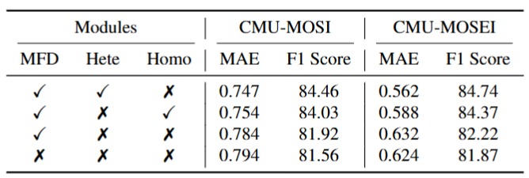

Multimodal representation learning aims to capture both shared and complementary semantic information across multiple modalities. However, the intrinsic heterogeneity of diverse modalities presents substantial challenges to achieve effective cross-modal collaboration and integration. To address this, we introduce DecAlign, a novel hierarchical cross-modal alignment framework designed to decouple multimodal representations into modality-unique (heterogeneous) and modality-common (homogeneous) features. For handling heterogeneity, we employ a prototype-guided optimal transport alignment strategy leveraging gaussian mixture modeling and multi-marginal transport plans, thus mitigating distribution discrepancies while preserving modality-unique characteristics. To reinforce homogeneity, we ensure semantic consistency across modalities by aligning latent distribution matching with Maximum Mean Discrepancy regularization. Furthermore, we incorporate a multimodal transformer to enhance high-level semantic feature fusion, thereby further reducing cross-modal inconsistencies. Our extensive experiments on four widely used multimodal benchmarks demonstrate that DecAlign consistently outperforms existing state-of-the-art methods across five metrics. These results highlight the efficacy of DecAlign in enhancing superior cross-modal alignment and semantic consistency while preserving modality-unique features, marking a significant advancement in multimodal representation learning scenarios.

Comprehensive experiments conducted across four widely-used multimodal benchmarks demonstrate DecAlign's superior performance compared to existing state-of-the-art methods. The results consistently show that DecAlign achieves substantial improvements in both fine-grained semantic distinction and overall alignment accuracy, highlighting the effectiveness and robustness of its hierarchical alignment strategy.


Experimental results presented in Tables 1 and 2 indicate that DecAlign consistently outperforms existing state-of-the-art multimodal methods across various datasets and evaluation metrics. Specifically, DecAlign achieves the lowest Mean Absolute Error (MAE) and the highest correlation coefficients, binary accuracies (Acc-2), and F1 Scores, demonstrating significant improvements in both regression and classification tasks.

The bubble chart visualization further emphasizes DecAlign's balanced and superior performance, maintaining high accuracy and F1 scores across diverse multimodal benchmarks, highlighting its robustness. Additionally, the confusion matrices clearly illustrate that DecAlign significantly reduces misclassification across sentiment intensity categories, exhibiting improved diagonal dominance and an enhanced ability to distinguish nuanced sentiment classes, thereby underscoring its precise alignment and semantic understanding.
Ablation studies (Tables 3 and 4) systematically evaluate the impact of DecAlign’s key modules and specific alignment strategies. Table 3 demonstrates that multimodal feature decoupling (MFD), heterogeneous alignment (Hete), and homogeneous alignment (Homo) each substantially contribute to performance, with the removal of either Hete or Homo individually resulting in minor performance drops, and the absence of both causing a notable decline. This confirms their essential roles and complementary interaction. Table 4 further analyzes individual alignment techniques such as Prototype-Based Optimal Transport (Proto-OT), Contrastive Training (CT), Semantic Consistency (Sem), and Maximum Mean Discrepancy (MMD). Results show that each alignment strategy significantly influences performance, emphasizing the critical importance of both fine-grained and global alignment mechanisms within DecAlign.

Figures 2 and 4 provide additional insights into DecAlign's effectiveness. Figure 2 visually demonstrates the impact of removing heterogeneous and homogeneous alignment modules, highlighting the consistent performance degradation across different sentiment categories when either module is omitted. This underscores the necessity of both alignment strategies in maintaining robust multimodal sentiment classification performance. Figure 3 offers a visual case study on the modality gap between vision and language features, illustrating that DecAlign effectively reduces modality discrepancies through hierarchical alignment. Models without heterogeneous or homogeneous alignment exhibit significantly larger modality gaps, validating DecAlign’s capability to bridge semantic and distributional differences across modalities.


BibTex Code Here